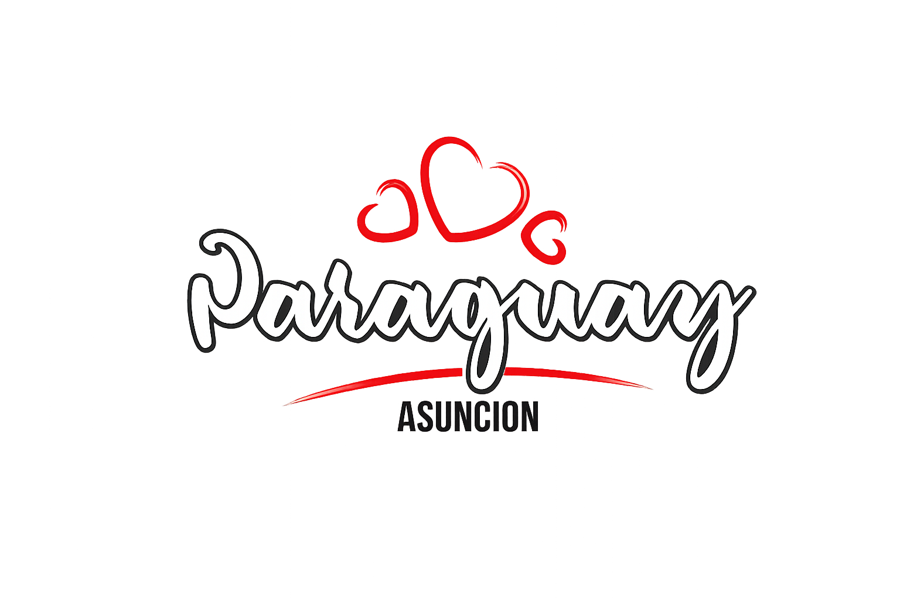
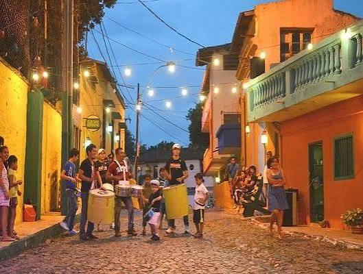
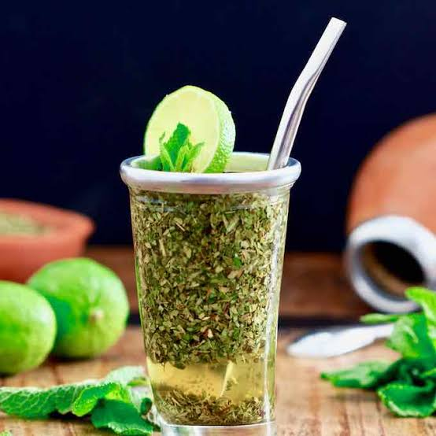
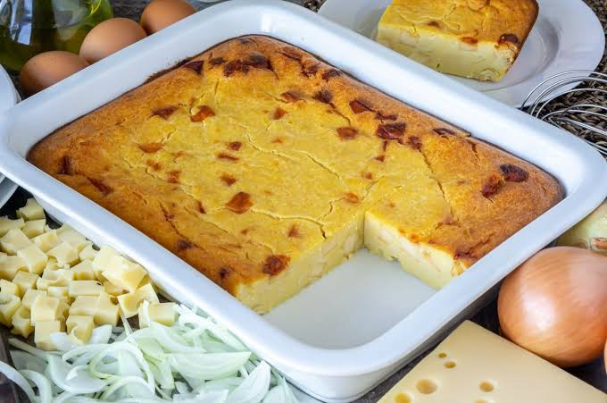
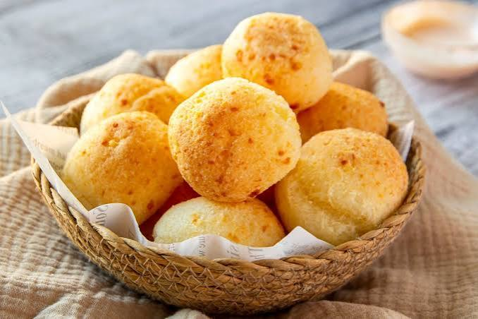

Ciudad de AsuncionLos íconos históricos y turísticos de Asunción

Uno de los barrios más antiguos de Asunción, famoso por sus pasajes estrechos, escalinatas intervenidas con mosaicos de colores, casas históricas y miradores con vistas espectaculares al centro y al río.
Mas informacionUn extenso paseo marítimo a orillas del río Paraguay, ideal para caminar, andar en bici o ver el atardecer. Es el lugar preferido por los asuncenos para tomar tereré y disfrutar del aire libre en la ciudad.
Mas informacionSede del Poder Ejecutivo, es uno de los edificios más emblemáticos y fotogénicos de la ciudad. Destaca por su arquitectura neoclásica del siglo XIX y su impresionante iluminación nocturna frente a la bahía.
Mas informacionUbicado en el centro histórico, es un hito arquitectónico e inspirador inspirado en Les Invalides de París. Alberga los restos de las grandes figuras de la historia paraguaya y es el principal punto de reunión para celebraciones y eventos ciudadanos.
Mas informacionUna muestra imprescindible de la rica cocina paraguaya.

Bebida tradicional a base de yerba mate y remedios yuyos.

El bizcocho salado único en el mundo a base de harina de maíz.

Pan tradicional de almidón de mandioca y queso paraguay. Crujiente por fuera y esponjoso por dentro.